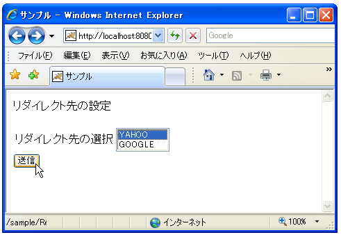
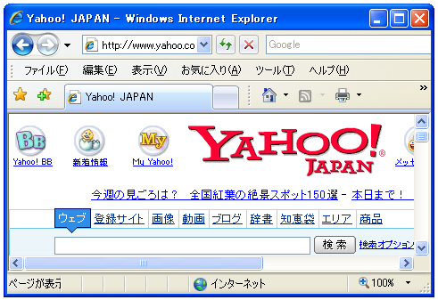
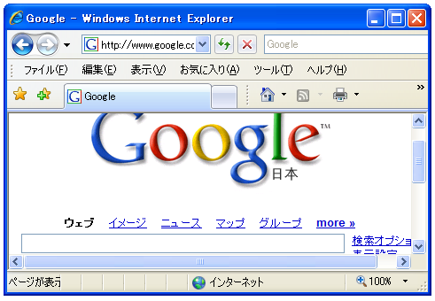

リダイレクトã�®è¨å®š(sendRedirect)
ステータスコードã�¨Locationヘッダーã�®è¨å®šã�«ã‚ˆã�£ã�¦URLを転é€�ã�•ã�›ã‚‹äº‹ã�Œå‡ºæ�¥ã�¾ã�™ã�Œã€�リダイレクト用ã�®ãƒ¡ã‚½ãƒƒãƒ‰ã�Œåˆ¥é€”用æ„�ã�•ã‚Œã�¦ã�„ã‚‹ã�®ã�§ã��れを利用ã�™ã‚‹ã�“ã�¨ã�§ã‚‚ä»–ã�®ãƒšãƒ¼ã‚¸ã�¸è»¢é€�ã�•ã�›ã‚‹äº‹ã�Œå‡ºæ�¥ã�¾ã�™ã€‚
リダイレクトをè¨å®šã�™ã‚‹ã�«ã�¯ã€ŒHttpServletResponseã€�インターフェースã�§å®šç¾©ã�•ã‚Œã�¦ã�„る「sendRedirectã€�メソッドを使ã�„ã�¾ã�™ã€‚
sendRedirect
public void sendRedirect(java.lang.String location)
throws java.io.IOException
Sends a temporary redirect response to the client using the specified
redirect location URL. This method can accept relative URLs; the servlet
container must convert the relative URL to an absolute URL before sending
the response to the client. If the location is relative without a leading
'/' the container interprets it as relative to the current request URI.
If the location is relative with a leading '/' the container interprets
it as relative to the servlet container root.
If the response has already been committed, this method throws an
IllegalStateException. After using this method, the response should be
considered to be committed and should not be written to.
Parameters:
location - the redirect location URL
Throws:
java.io.IOException - If an input or output exception occurs
java.lang.IllegalStateException - If the response was committed or
if a partial URL is given and cannot be converted into a valid URL
引数�リダイレクト先�URLを指定���。URL�絶対パス�他�相対パス��指定も�能��。
「sendRedirectã€�メソッドを使ã�†å ´å�ˆã�«ã�¯æ¬¡ã�®ã‚ˆã�†ã�«è¨˜è¿°ã�—ã�Ÿå ´å�ˆã�¨å�Œã�˜ã�§ã�™ã€‚
response.setStatus(HttpServletResponse.SC_MOVED_TEMPORARILY);
response.setHeader("Location", "http://www.yahoo.co.jp/");
サンプルプãƒã‚°ãƒ©ãƒ
��簡��サンプル�試��見��。クライアント��フォーム�指定��URL�リダイレクト�るよ�����。
リダイレクト先を���るフォーム���れるHTMLページ��次�よ��も���。
<!DOCTYPE html PUBLIC "-//W3C//DTD HTML 4.01//EN" "http://www.w3.org/TR/html4/strict.dtd"> <html lang="ja"> <head> <meta http-equiv="Content-Type" Content="text/html;charset=Shift_JIS"> <title>サンプル</title> </head> <body> <p>リダイレクト先ã�®è¨å®š</p> <form action="/sample/ResponseSample5" method="get"> <table> <tr> <td>リダイレクト先ã�®é�¸æŠ�</td> <td> <select name="url" size="2"> <option value="www.yahoo.co.jp">YAHOO</option> <option value="www.google.co.jp">GOOGLE</option> </select> </td> </tr> </table> <input type="submit" name="button1" value="é€�ä¿¡"> </form> </body> </html>
次�フォーム�ら�られ��るリクエストパラメータを処��るサーブレットを作����。
import java.io.*;
import javax.servlet.*;
import javax.servlet.http.*;
public class ResponseSample5 extends HttpServlet {
public void doGet(HttpServletRequest request, HttpServletResponse response)
throws IOException, ServletException{
response.setContentType("text/html; charset=Shift_JIS");
PrintWriter out = response.getWriter();
String tmp;
String url = "";
tmp = request.getParameter("url");
if (tmp == null || tmp.length() == 0){
url = "http://www.excite.co.jp/";
}else{
url = "http://" + tmp;
}
response.sendRedirect(url);
}
}
サンプルプãƒã‚°ãƒ©ãƒ をコンパイルã�—ã�¦ä½œæˆ�ã�—ã�Ÿã€ŒResponseSample5.classã€�ファイルを別途作æˆ�ã�—ã�Ÿã€Œweb.xmlã€�ファイルを次ã�®ã‚ˆã�†ã�«é…�ç½®ã�—ã�¾ã�™ã€‚
D:¥ -- servlet-sample
|
+-- WEB-INF
|
+-- (web.xml)
|
+-- (formsample6.html)
|
+-- classes
|
+-- (ResponseSample5.class)
web.xmlファイル�次�よ���り��。
<?xml version="1.0" encoding="ISO-8859-1"?>
<web-app xmlns="http://java.sun.com/xml/ns/j2ee"
xmlns:xsi="http://www.w3.org/2001/XMLSchema-instance"
xsi:schemaLocation="http://java.sun.com/xml/ns/j2ee
http://java.sun.com/xml/ns/j2ee/web-app_2_4.xsd"
version="2.4">
<servlet>
<servlet-name>ResponseSample5</servlet-name>
<servlet-class>ResponseSample5</servlet-class>
</servlet>
<servlet-mapping>
<servlet-name>ResponseSample5</servlet-name>
<url-pattern>/ResponseSample5</url-pattern>
</servlet-mapping>
</web-app>
コンテã‚ストファイルを作æˆ�ã�—「(Tomcatをインストールã�—ã�Ÿãƒ‡ã‚£ãƒ¬ã‚¯ãƒˆãƒª)¥Tomcat 5.5¥conf¥Catalina¥localhost¥ã€�ディレクトリã�«ã€Œsample.xmlã€�ファイルã�¨ã�—ã�¦ä¿�å˜ã�—ã�¾ã�™ã€‚内容ã�¯ä»¥ä¸‹ã�®é€šã‚Šã�§ã�™ã€‚
<Context path="/sample" docBase="d:/servlet-sample/sample"> </Context>
準備�以上��。��Tomcatを�起動���ら「http://localhost:8080/sample/formsample6.html��ブラウザ�アクセス��下��。

リダイレクト先をé�¸æŠ�ã�—ã�¦ã€Œé€�ä¿¡ã€�ボタンをクリックã�—ã�¦ä¸‹ã�•ã�„。「YAHOOã€�ã‚’é�¸æŠ�ã�—ã�¦ã�„ã‚‹å ´å�ˆã�¯æ¬¡ã�®ã‚ˆã�†ã�«YAHOOã�¸ãƒªãƒ€ã‚¤ãƒ¬ã‚¯ãƒˆã�•ã‚Œã�¾ã�™ã€‚

「GOOGLEã€�ã‚’é�¸æŠ�ã�—ã�Ÿå ´å�ˆã�¯GOOGLEã�¸ãƒªãƒ€ã‚¤ãƒ¬ã‚¯ãƒˆã�•ã‚Œã�¾ã�™ã€‚

( Written by Tatsuo Ikura )

著者 / TATSUO IKURA
åˆ�心者ï½�ä¸ç´šè€…ã�®æ–¹ã‚’対象ã�¨ã�—ã�Ÿãƒ—ãƒã‚°ãƒ©ãƒŸãƒ³ã‚°æ–¹æ³•ã‚„開発環境ã�®æ§‹ç¯‰ã�®è§£èª¬ã‚’è¡Œã�†ã‚µã‚¤ãƒˆã�®é�‹å–¶ã‚’è¡Œã�£ã�¦ã�„ã�¾ã�™ã€‚